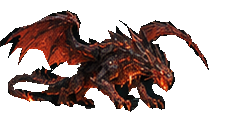

<!doctype html><html lang="en"><meta charset="utf-8"><title>Ashfang — current motion studies</title>
<style>body{background:#171619;color:#eedbc2;margin:0;font:16px system-ui}main{max-width:1200px;margin:24px auto;padding:20px}h1{font-size:26px}p,small{color:#bcae9f}button,select{background:#3b2b28;color:#ffe4c5;border:1px solid #80523b;padding:10px 16px;margin:4px;border-radius:5px}button[aria-pressed=true]{background:#7a3824}canvas{background:#242226;image-rendering:pixelated;width:100%;border:1px solid #4a3933}input[type=range]{width:100%}.row{display:grid;grid-template-columns:3fr 1fr;gap:20px}.ref{width:100%;image-rendering:pixelated}label{margin:10px}footer{margin-top:24px}@media(max-width:700px){.row{grid-template-columns:1fr}}</style>
<main><h1>Ashfang · card-based motion studies</h1><p>Original card artwork and your joint guide. Local RTX 5090 renders.</p>
<nav><button data-clip="idle" aria-pressed="true">Idle</button><button data-clip="stalk" aria-pressed="false">Stalk</button><button data-clip="entry" aria-pressed="false">Idle → stalk</button><button data-clip="breath" aria-pressed="false">Fire breath</button></nav>
<div class="row"><div><canvas id="stage" width="1248" height="576"></canvas><input aria-label="Animation frame" id="scrub" type="range" min="0" max="63" value="0"><button id="play">Pause</button><label>Speed <select id="speed"><option value="1">Normal</option><option value="0.25">Quarter speed</option><option value="2">Double speed</option></select></label><label><input id="grid" type="checkbox">Ground grid</label><p id="frame"></p></div><aside><h3>Original pose reference</h3><h3>Mobile-size check</h3><canvas id="native" width="320" height="192"></canvas><p id="notes"></p></aside></div>
<footer><small>Work in progress: one view. Pose transitions, flight, collapse animation, remaining directions and game integration are unfinished. No approval is inferred.</small></footer></main>
<script>
const $=id=>document.getElementById(id);const clips={entry:{src:'idle-stalk-entry-001/entry-atlas.png',w:320,h:192,n:160,fps:24,once:true,ref:'action-reference-001/stalk-original.png',note:'Planted idle into accelerating stalk. Foot anchors stay in world space through support; original textures deform through the shared rig. One-shot entry only; stopping and breath entry remain unfinished.'},idle:{src:'skeletal-idle-002/idle-atlas.png',w:320,h:192,n:64,fps:16,ref:'references-v5/pixel-idle-reference.png',note:'Breathing idle on the corrected anatomical rig. All four paws remain planted while chest, wings and tail respond.'},stalk:{src:'layered-stalk-007/stalk-atlas.png',w:320,h:192,n:64,fps:24,travel:12,ref:'action-reference-001/stalk-original.png',note:'Corrected limb draw order restores original armour. Lower stalking posture with planted stance joints and delayed body/wing/tail response.'},breath:{src:'card-breath-attack-002/breath-atlas.png',w:416,h:192,n:96,fps:24,ref:'action-reference-001/breath-original.png',note:'Windup, fire emission and recovery from the original breath panel. Lower jaw now articulates at its hinge. Transition from idle remains unfinished.'}};
let current=clips.idle,atlas=new Image(),frame=0,clock=0,last=0,playing=true,entryRoots=[];fetch('idle-stalk-entry-001/contact-track.json').then(r=>r.json()).then(track=>entryRoots=track.map(f=>f.root));
function choose(name){current=clips[name];atlas=new Image();atlas.src=current.src;clock=0;frame=0;playing=true;$('play').textContent='Pause';$('scrub').max=current.n-1;$('ref').src=current.ref;$('notes').textContent=current.note;document.querySelectorAll('[data-clip]').forEach(b=>b.setAttribute('aria-pressed',String(b.dataset.clip===name)))}
document.querySelectorAll('[data-clip]').forEach(b=>b.onclick=()=>choose(b.dataset.clip));choose('idle');
function draw(){const c=$('stage').getContext('2d');c.imageSmoothingEnabled=false;c.clearRect(0,0,1248,576);if($('grid').checked){const shift=(current.once?(entryRoots[frame]||0):frame/current.n*(current.travel||0))*3;c.strokeStyle='#70523e';c.beginPath();for(let x=-50;x<1300;x+=36){c.moveTo(x-shift,441);c.lineTo(x+18-shift,441)}c.stroke()}const dx=(416-current.w)*1.5;c.drawImage(atlas,frame%8*current.w,Math.floor(frame/8)*current.h,current.w,current.h,dx,0,current.w*3,576);const n=$('native').getContext('2d');n.imageSmoothingEnabled=false;n.clearRect(0,0,320,192);n.drawImage(atlas,frame%8*current.w,Math.floor(frame/8)*current.h,current.w,current.h,Math.round((320-current.w*.46)/2),52,Math.round(current.w*.46),Math.round(current.h*.46));$('scrub').value=frame;$('frame').textContent=`Frame ${frame+1} / ${current.n} · ${(current.n/current.fps).toFixed(2)} seconds`}
function tick(t){if(last&&playing){clock+=(t-last)*Number($('speed').value);const next=Math.floor(clock*current.fps/1000);frame=current.once?Math.min(next,current.n-1):next%current.n;if(current.once&&next>=current.n){playing=false;$('play').textContent='Replay'}}last=t;if(atlas.complete&&atlas.naturalWidth)draw();requestAnimationFrame(tick)}requestAnimationFrame(tick);
$('play').onclick=()=>{if(current.once&&frame===current.n-1){clock=0;frame=0;}playing=!playing;$('play').textContent=playing?'Pause':'Play'};$('scrub').oninput=e=>{frame=Number(e.target.value);clock=frame/current.fps*1000;playing=false;$('play').textContent='Play'};
</script></html>
